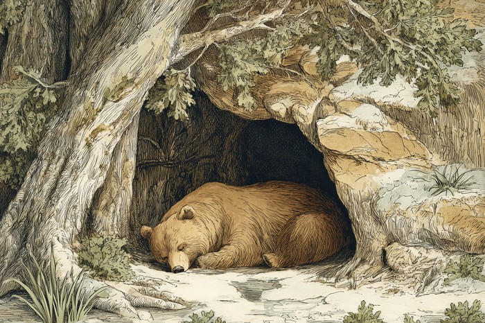

気温の上昇だけでなく、日照時間の変化や体内に備わった一年周期の体内時計(概年リズム)が重なって働くことで、冬眠中の動物は春に目を覚まします。 Warmth alone doesn't wake them. Their bodies have been counting the year.
冬眠中の動物が春に目覚めるのは、気温の上昇だけでなく日照時間の延び・体内の一年周期の体内時計(概年リズム)が重なって働くためです。冬眠中も深い眠りと一時的な目覚めを繰り返しており、春にそのリズムがリセットされて完全に目覚めます。
🔍 ちょっと寄り道:動物同士に相性があるように、人同士にも相性があります。気になった方は相性診断を試してみてください。
目覚めの合図は「暖かさ」だけではない
冬眠からの目覚めは、気温の上昇・日の長さの延び・体内の「概年リズム」という三つの要素が重なって起こるのです。春の目覚めは、気温が上がったからというだけで起こるわけではありません。
三つ目の「概年リズム」とは、動物自身が体の中に持っている、およそ1年周期の体内時計のことです。1日の眠りと目覚めを刻む体内時計と同じ考え方で、こちらは1年をひと巡りとして季節の位置を刻んでいます。
外からの合図と内なる暦が重なったとき、体はようやく「春が来た」と判断するのですね。
- 気温の上昇:春に向けて気温が上がっていくこと。
- 日の長さの延び:日照時間が延びていくこと。メラトニンの分泌量が信号として働く。
- 体内の概年リズム:動物自身が持つ、およそ1年周期の体内時計。
「日の長さ」を体内時計に届けるホルモン、メラトニン
答えを先に言えば、冬に多く夏に向けて減っていくメラトニンの季節的な増減が、日の長さの信号として体内時計へ届いているのです。メラトニンはホルモンの一種で、その分泌量は日照時間の短い冬の月に多くなり、夏が近づくにつれて減っていきます。
動物の体内時計は、この一年を通した増減を「日の長さの信号」のひとつとして受け取っているのです。目に見えない日の延び縮みが、ホルモンの量という形で、眠っている体の奥まで届いているのですね。
冬眠は「ひと続きの長い眠り」ではない
冬眠中の小さな哺乳類は、深い眠りと一時的な目覚めを冬のあいだ何度も繰り返しており、春にそのリズムがリセットされて完全に目を覚ますのです。深い眠りのほうは体温を大きく下げる「持続的冬眠」、目覚めのほうは体温が一時的に平常近くまで戻る「中途覚醒」と呼ばれ、真冬のさなかにも周期的に目を覚ます時間が挟まっています。
そして春が近づき、気温の上昇と日の延びがこの体内のリズムをリセットすると、動物は冬眠から完全に目を覚まします。冬眠とは静止した長い一夜というより、小さな目覚めを重ねながら春へ向かう、季節の道のりなのかもしれません。

クマの冬眠は、実は「本当の冬眠」とは別の仲間として扱われます。深く冬眠する動物は体温を氷点近くまで下げますが、クマは平常の37〜39℃から31〜35℃ほどまでしか下がらず、呼吸も心拍もゆっくり続けたまま、しかも冬眠のあいだは排尿も排便もいっさいせず、尿素を体内で再利用して筋肉の衰えを防いでいます。この違いから、これを「冬眠」と呼ぶかどうかは研究者のあいだで長く議論され、「冬睡眠」と分類されることもあるのです。
ミニクイズ:冬眠中の動物は、春までずっと同じ深い眠りを続けている?(タップして答えを見る)
こたえ×。冬眠中の小さな哺乳類は、体温を大きく下げる「持続的冬眠」と、体温が一時的に平常近くまで戻る「中途覚醒」を冬のあいだ何度も繰り返しており、春にそのリズムがリセットされて完全に目を覚まします。
出典: Tøien, Ø. et al. "Hibernation in Black Bears: Independence of Metabolic Suppression from Body Temperature" Science, 2011. science.org